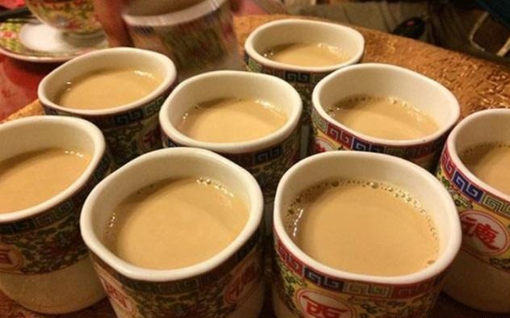
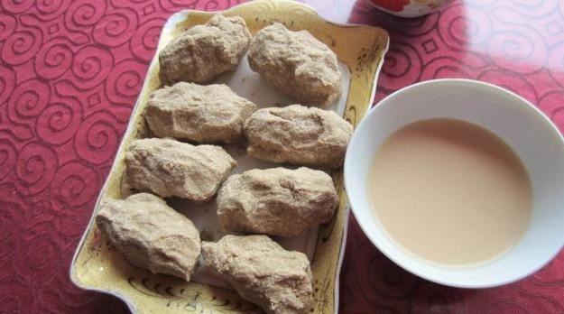
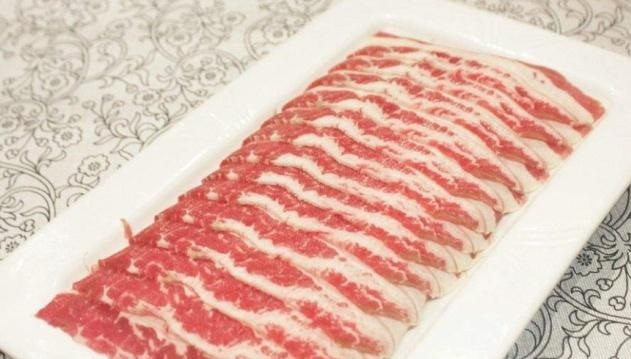

酥油茶
这个茶在藏族人的生活中相当于白开水一样的存在了，
不管是待客还是日常的生活中都是会喝上一两碗，不单单是一碗简单的茶，其
实还有提神醒脑止渴等作用，常喝的话还有益于身体健康。喝到嘴里是醇香
浓厚的，但又很香的酥油和茶味，是高原生活中的必需品，如果说去到这个地方，
藏族人民肯定先招待的就是这一碗油茶了。

糌粑
作为藏族人民日常生活中的主食，其实它的营养程度是非常高的，从本身的原料
就可以看出它的营养价值。原料是将青稞洗净晾干之后，再磨成面粉，等到食用的时候放
一些酥油茶，奶酪等等搅拌均匀，捏成团就可以直接使用了，有非常高的营养价值，同时，
因为它含有的热量比较高又会有抵御寒冷的功效。当去藏族人民家做客的时候，肯定是会拿
出酥油茶和糌粑一起让你食用的。

风干耗牛肉
藏族人一般吃的就是牛羊肉，那么他们为了这肉能长久的保鲜，也能在寒冷的冬季吃上一口肉，就
把牛肉风干熏蒸等到想吃的时候再拿出来，配上烈性的酒，吃一口风干牛肉也是一种美食。当然如
果你去旅行的话，热情的藏族人也会把这样的牛肉端到你的面前，让你品尝一番。